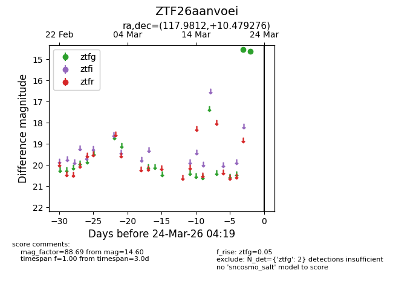
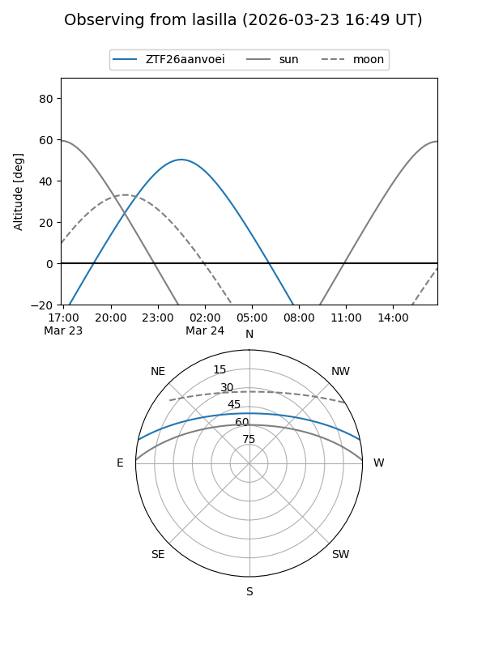
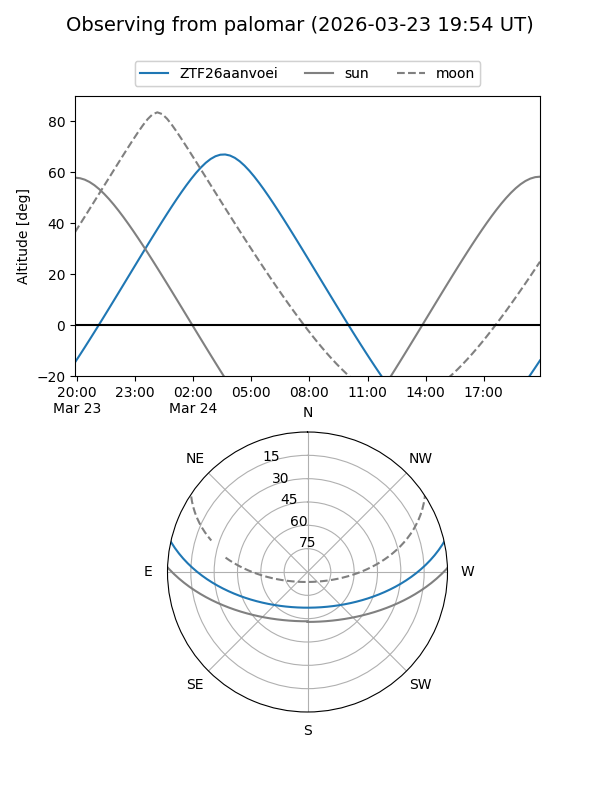

ZTF26aanvoei
Target ZTF26aanvoei at 2026-03-24 04:22
Aliases and brokers:
FINK: link
Lasair: link
ALeRCE: link
alt names
ZTF26aanvoei (ztf,fink_ztf)
Coordinates:
equatorial (ra, dec) = 117.9812,+10.47928
equatorial (HMS+DMS) = 07:51:55.49,+10:28:45.39
galactic (l, b) = (210.2238,+18.13359)
Flags:
Photometry:
last ztfg=14.60
2 ztfg detections
Lightcurve

Visibility


Additional plots